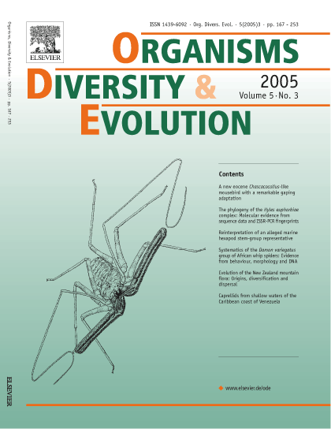

, head of the Arachnology Lab, is Curator of Arachnids and Myriapods in the Division of Invertebrate Zoology at the AMNH.
Scorpion Phylogeny and Higher Classification: The framework for my current research is a global phylogeny of the Order Scorpiones, using exemplar species as terminal taxa, and morphological data, together with genomic data, as characters. When a comprehensive phylogeny of the order has been established, it will be possible to revise the presently contentious familial classification. It will also be possible to investigate biogeographical patterns at the continental and intracontinental levels and to test adaptational hypotheses, e.g. concerning the evolution of scorpion venom, in a phylogenetic context. A large collection of tissue samples and associated vouchers, developed through fieldwork and donations from colleagues, is steadily being deposited in the
Ambrose Monell Collection for Molecular and Microbial Research of the AMNH. Fieldwork for the project has taken my research group and I
around the world.
Revisionary Systematics: Besides investigating phylogenetic relationships among the major lineages of scorpions, I am interested in revisionary systematics, particularly of the North American and Afrotropical scorpion faunas. I was PI on the NSF DEB grant
Revisionary Systematics of the North American Scorpion Family Vaejovidae which is continuing to revise the systematics of the endemic, and highly speciose North American scorpion family Vaejovidae. I am also conducting a world revisions and biogeographical analyses of the Gondwana families Bothriuridae, Hormuridae and Scorpionidae, comprising several paraphyletic genera. I intend to eventually revise all the scorpion genera occurring in sub-Saharan Africa. Taxonomic revisions and phylogenetic analyses of the following genera are published or in preparation:
Lisposoma (Bothriuridae);
Parabuthus,
Pseudolychas and
Uroplectes (Buthidae);
Cheloctonus,
Hadogenes and
Opisthacanthus (Hormuridae);
Opistophthalmus (Scorpionidae).
Adaptational and Biogeographical Hypotheses: Phylogenetic analysis precedes the testing of adaptational and biogeographical hypotheses involving scorpions. My work on southern African scorpions is testing hypotheses about adaptation to substrata and sexual dimorphism, along with vicariance biogeographical hypotheses concerning the development of sand systems and river drainage. Such hypotheses can be more rigorously tested once other southern African scorpion genera have been revised, and phylogenetic analyses of their species relationships conducted.
Distribution and Conservation: An atlas of southern African scorpions, based on material contained in all world collections and new material collected during ongoing expeditions, is another of my goals. When the distributions of southern African scorpions have been accurately mapped, an assessment of their conservation status can be undertaken. Many range-restricted scorpions are on the verge of extinction due to current land-use practices in southern Africa. A recent grant from the JRS Biodiversity Foundation, entitled '
Improvement and Integration of Arachnid Biodiversity Information in South Africa' enabled me to identify the scorpion holdings of all major natural history collections in sub-Saharan Africa.
Minor Arachnid Orders: I am interested in the systematics of other minor arachnid orders, notably Pedipalpi (Amblypygi, Thelyphonida and Schizomida), and Solifugae, all of which are very poorly understood. I was Co-PI on the NSF-EAR grant
'Assembling the Tree of Life: Phylogeny of Spiders', responsible for the collection and analysis of data Amblypygi, Thelyphonida, Schizomida, and Palpigradi and Co-PI on another NSF-DEB grant, the
'Global Survey and Inventory of Solifugae'. I am particularly interested in taxonomic revisions and phylogenetic analyses of southern African Solifugae, which comprise nearly one quarter of the world solifuge diversity. As patterns of solifuge distribution in southern Africa closely mirror those of the scorpions, research into the systematics of southern African solifuges will facilitate the study of congruent biogeographic patterns in the subcontinent, e.g. the origins and relationships of the Namib and Kalahari sand systems.

Insect-Plant Associations: Besides arachnids, I have specific interests in the evolution of insect-plant associations, and have examined parallel cladogenesis between cephaleline leaf-hoppers (Cicadellidae) and their host-plant Restionaceae.
Theory and Practice of Systematics: Although my research is, and will continue to be, empirically focused, empirical research is no better than the theory on which it is based. Nowhere is this more evident than in the ever-changing field of systematics. My research is grounded in phylogenetic theory. I advocate a holistic, monographic approach to systematics, combining species-level taxonomy, phylogenetic and biogeographical analysis, and integrating morphological, genomic and geographical data. My research keeps pace with current methodology and philosophy in morphology and genomics. I am equally interested in developing new paradigms in the homology of morphological character systems and exploring cutting-edge approaches to phylogenomics, like Anchored Hybrid Enrichment.
Funding
I acknowledge the past and ongoing support of many foundations and funding agencies for my research and that of my students and postdoctoral fellows:
American Arachnological Society
American Museum of Natural History
Australian Biological Resources Study
Explorers Club
Higher Education Commission of Pakistan
JRS Biodiversity Fund
Mohammad bin Zayed Species Conservation Fund
Museum of Comparative Zoology, Harvard University
National Geographic Society
National Research Foundation of South Africa
Skye Foundation and Charitable Trust
U.S.-Israel Binational Science Foundation
U.S. National Science Foundation
Richard Lounsbery Foundation